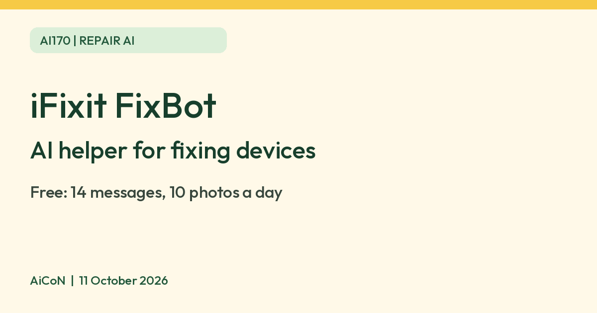

iFixit FixBot: a free AI repair helper, and its daily limits
iFixit says anyone with a free account can chat with FixBot, its AI repair assistant, on the web or in the app. The free plan allows 14 messages and 10 photos per rolling day, not a midnight reset.

What it is
FixBot is iFixit's AI repair assistant. iFixit's help page says it helps you diagnose a problem, find the right part and follow repair guidance by chat, photo or voice. It works on the web at fixbot.ifixit.com and in the iFixit app for iOS and Android. iFixit says it is powered by its own repair library of step-by-step guides and community answers. You can describe a fault, such as a phone that shuts off, or send a photo of the device.
Is it free
Yes, with daily limits. iFixit's help page says anyone with an iFixit account can chat with FixBot for free on the web and in the app. The limits listed there, current as of July 2026, are 14 messages a day (up to 7 per 30 minutes) and 10 photos a day. These are rolling windows rather than calendar-day resets. Check avatar > Usage for your remaining allowance and reset information. Voice mode and PDF uploads are not in the free plan. The paid plan for individuals is FixBot Enthusiast. iFixit lists its limits as 500 messages a day, 100 photos, 50 uploads and 150 voice minutes. iFixit's page lists prices in US dollars and says they may vary by region. The current landing page shows USD $79.99 billed annually and a "3 months free" promotion, but we did not verify its eligibility or renewal checkout. An Indian rupee checkout total was not verified. Free chat does not include parts/tools or a paid subscription; review the final price, tax, regional terms and renewal before paying. Cancelling stops future renewals, and refunds are assessed case by case according to the help page.
Is it available in India
We could not confirm this. iFixit's pages name the web, iOS and Android but do not list countries. Try the website first, and check your app store.
Privacy before uploading
iFixit's privacy policy says it stores FixBot chats and, when used and permitted, voice recordings. Requests can be processed by US-based AI/voice providers. Its agreements prohibit those providers from training their own general-purpose models on FixBot conversations, but iFixit may review conversation data, excluding audio, to evaluate and improve FixBot. The policy says you can opt out of that improvement use by contacting privacy@ifixit.com.
Chat logs/transcripts and diagnostics are retained for the account duration; after closure or a deletion request they are deleted within a reasonable period, with law, dispute and legal-hold exceptions. Aggregated de-identified data may be kept indefinitely. This is not on-device-only or zero-retention chat. Remove names, addresses, passwords, serial labels and confidential information from photos or manuals where they are not needed. Get permission before uploading someone else's device information.
Sharing a chat uses "Create Public Link", and anyone with the link can read it. Only create one if you mean to share; the help page offers "Make Private" to turn it off again.
How to try it
- Open fixbot.ifixit.com or the iFixit app and sign in with a free iFixit account.
- Identify the exact device model and describe the fault. If a photo helps, exclude personal/sensitive details. Do not upload confidential repair manuals.
- Ask for the matching original guide and read its warnings, tools and part numbers before starting. A similar model's guide is not proof the same repair applies to yours.
Limits to know
- It is a guide, not a safety authority. Check the exact guide's safety preparation. Powering off/unplugging is not enough for every repair: charged batteries and capacitors can still be dangerous. Do not puncture, heat, charge or keep using a swollen/damaged battery. Avoid mains/high-voltage appliances and repairs beyond your skill; use a qualified technician. Do not bypass safety interlocks or follow an AI step that conflicts with the guide.
- The free plan has daily message and photo limits that iFixit adjusts from time to time.
- Check any part number or screw detail against the matching iFixit guide before you buy or cut.
- We did not test it ourselves.
Frequently asked questions
Is FixBot free?
iFixit says anyone with an iFixit account can chat with FixBot for free. The free plan allows 14 messages and 10 photos a day, as of July 2026.
Will my allowance reset at midnight?
No. The official help page says limits use rolling windows. The Usage screen is the place to check remaining allowance and resets.
Can it replace a repair technician?
No. The terms describe AI output as provided without an accuracy/fitness warranty. Verify safety-critical steps independently and stop when the exact model, hazard or instruction is uncertain.
What changed since launch?
The launch described a limited-period free offer. The current help page now says the free tier does not expire and has rolling limits, while voice and PDF uploads belong to paid plans. Limits may change; the displayed help table is marked July 2026.
Sources: iFixit FixBot help page, iFixit FixBot page, iFixit privacy policy, iFixit terms, FixBot usage help. Checked 11 October 2026.